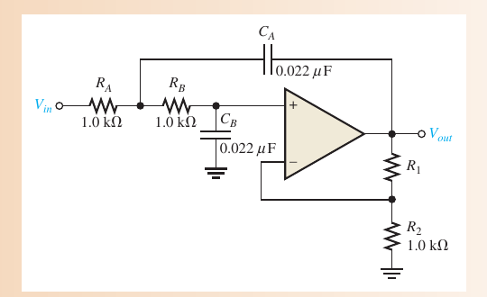
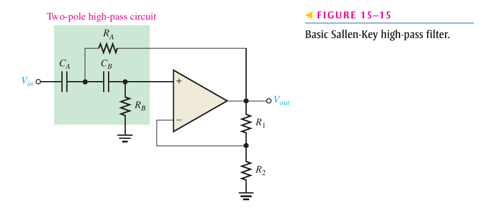
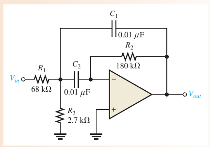

06. Active filters Basic responses, poles, Butterworth/Chebyshev/Bessel, Sallen-Key low/high-pass, band-pass and band-stop (Floyd Chapter 15).
EASA Part-66 4.1.3 linear ICs (extension) CLO: CLO2, CLO3 Time: ≈ 6 h Questions: 126 (43 original)
Floyd 9e Ch.15 · Jaeger 5e Ch.12 §12.3 · Book content map
🎯 After this module you will Identify the four responses and compute BW, Q Compute fc and design Sallen-Key stages Choose DF for a Butterworth response Compute f0 and BW of a multiple-feedback filter PART 1/5
01
Filter foundations Four responses Poles and roll-off Butterworth, Chebyshev, Bessel Part 1 · Foundations
The four basic responses Response Passband Critical frequencies Low-pass 0 → fc 1 High-pass fc → ∞ 1 Band-pass f₁ → f₂ 2 Band-stop outside f₁…f₂ 2
📖 Explanation for beginners A filter is named after the band of frequencies it passes.
Part 1 · Foundations
Poles and the roll-off rate One pole = one RC circuit −20 dB/decade = −6 dB/octave 📖 Explanation for beginners More poles give a steeper skirt; the order of a filter equals its number of poles.
Part 1 · Foundations
The three response characteristics Characteristic Passband Roll-off Strength Butterworth maximally flat moderate flat response Chebyshev ripple steepest fast transition Bessel flat, linear phase slower preserves pulses
📖 Explanation for beginners The damping factor DF = 2 − R1/R2 decides which characteristic you get.
Part 1 · Foundations
The two-pole Sallen-Key low-pass filter 
Floyd Fig. 15–11 📖 Explanation for beginners Two RC sections set fc; the R1/R2 divider sets the damping.
PART 2/5
02
Design methods Sallen-Key high-pass Butterworth cascades Band-pass and band-stop Part 2 · Methods
The Sallen-Key high-pass filter 
Floyd Fig. 15–15 From low-pass to high-pass Swapping resistors and capacitors keeps fc and the characteristic.
📖 Explanation for beginners Same structure, series capacitors block dc and low frequencies.
Part 2 · Methods
Cascading and Butterworth damping factors Cascading: poles add (2 + 2 = 4 poles → −80 dB/decade) Each stage uses its own damping factor so the total is Butterworth n DF 2 1.414 4 1.848 ; 0.765 6 1.932 ; 1.414 ; 0.518
📖 Explanation for beginners R1/R2 = 2 − DF for each stage (e.g. 0.068, 0.586, 1.482 for six poles).
Part 2 · Methods
The multiple-feedback band-pass filter 
Floyd Fig. 15–19 📖 Explanation for beginners One op-amp, two equal capacitors; R2 sets the bandwidth.
Part 2 · Methods
Band-pass by cascading, band-stop, state-variable Band-pass from cascading a low-pass and a high-pass (LP fc > HP fc) Band-stop = sum of a low-pass and a high-pass output that are separated State-variable: one summer and two integrators give three outputs 📖 Explanation for beginners One structure can supply several responses at once.
PART 3/5
03
Worked examples from the book Basic responses Butterworth Band-pass Part 3 · Book examples
Basic responses (Floyd Problems 3–6) Example · Floyd Problems 3–4
fc = 1/(2π × 2.2 kΩ × 0.0015 μF) = 48.2 kHz; −20 dB/decade
Example · Floyd Problems 5–6
BW = 700 Hz, Q ≈ 5.05; f0 = 15 × 1 kHz = 15 kHz
📖 Explanation for beginners Note: the bandwidth of a single-pole high-pass cannot be found from R and C alone.
Part 3 · Book examples
Butterworth filters (Floyd Problem 13) Example · Floyd Problem 13
Six-pole Butterworth: R1/R2 = 0.068, 0.586, 1.482
Example · Design
fc = 1 kHz, C = 0.01 μF → R = 15.9 kΩ; R1 = 0.586·R2
📖 Explanation for beginners Three damping factors for three stages, one R1/R2 ratio each.
Part 3 · Book examples
Multiple-feedback band-pass Example · Floyd Problem 19(b)
R1 = 47 kΩ, R2 = 150 kΩ, R3 = 1.8 kΩ, C = 0.022 μF → f0 = 449 Hz, BW = 96.5 Hz, Q = 4.65
📖 Explanation for beginners Book: f0 = 449 Hz, BW = 96.4 Hz (exact BW 96.45 Hz).
PART 4/5
04
Common pitfalls Q and bandwidth Choosing a characteristic Tolerances Part 4 · Pitfalls and extensions
Typical traps Bandwidth of a high-pass filter It cannot be found from R and C: it also depends on the op-amp’s upper limit.
Q and bandwidth Q = f0/BW, not BW/f0.
📖 Explanation for beginners Check Hz/kHz and use f0 = √(f1·f2) for Q.
Part 4 · Pitfalls and extensions
Choosing the characteristic Chebyshev is steeper but rippled; Bessel preserves pulse shape The RC-formula fc is only an approximation of the −3 dB point when the damping differs from Butterworth 📖 Explanation for beginners Pick by requirement: flat, steep or linear phase.
Part 4 · Pitfalls and extensions
Practical limits Component tolerances shift fc and Q; use tight-tolerance parts The op-amp needs a gain–bandwidth product well above fc 📖 Explanation for beginners The ideal filter assumes a fast enough op-amp.
PART 5/5
05
Applications and summary Sensor filtering (illustrative) Formula table Take-aways Part 5 · Applications and summary
Sensor signal filtering on aircraft Illustrative: filtering high-frequency noise from a sensor signal ahead of the A/D converter (anti-aliasing) Illustrative: a narrow band-pass to pick out a reference tone and a notch to remove mains hum 📖 Explanation for beginners Illustrations of principle only, not a specific system.
Part 5 · Applications and summary
Chapter 15 formula table Quantity Formula fc 1/(2πRC) BW (BP) f₂ − f₁ Q, f0 f0/BW ; √(f₁f₂) DF 2 − R1/R2 MFB BW = 1/(πR2C)
📖 Explanation for beginners These five formulas solve most exercises.
Part 5 · Applications and summary
Three take-aways Poles = order; −20 dB/decade each R1/R2 sets DF, RC sets fc Next module: oscillators and the 555 timer 📖 Explanation for beginners Remember the two networks: frequency-selective and feedback.
◀ Trước Sau ▶
⛶ Toàn màn hình Detailed notes 1. Detailed content mapped to the books Floyd §15–1 basic responses; §15–2 Butterworth/Chebyshev/Bessel; §15–3 low-pass; §15–4 high-pass; §15–5 band-pass (cascading, multiple feedback, state-variable); §15–6 band-stop; §15–7 measuring responses. See also Jaeger 5e Ch.12 §12.3 per the syllabus map. 2. Five worked examples Example · 1
fc = 1/(2π·2.2k·0.0015μ) = 48.2 kHz
Example · 2
BW = 3.9 − 3.2 = 0.7 kHz; Q = 3.533/0.7 = 5.05
Example · 3
R1/R2 = 2 − DF = 0.068, 0.586, 1.482
Example · 4
MFB: f0 = 449 Hz, BW = 96.5 Hz
Example · 5
LP + HP cascade: BW = 5 kHz − 500 Hz = 4.5 kHz
3. History and theory context Butterworth (1930) sought a maximally flat response; Chebyshev trades ripple for steepness; Bessel keeps the group delay constant. The Sallen–Key structure (1955) uses one op-amp per two-pole stage.
4. Aircraft case study (illustrative) Illustrative: an anti-aliasing low-pass ahead of the A/D converter and a notch against mains hum. Not a specific system.
5. Exam pitfalls Using Q = BW/f0. Forgetting that a high-pass bandwidth is not determined by R and C. Confusing order with number of stages. Using DF instead of R1/R2 (R1/R2 = 2 − DF). Quick self-check (10 questions, textbook originals first) Deep practice Open this module's question bank (126 + 10)
Jupyter notebook Download the notebook (already executed, real outputs):